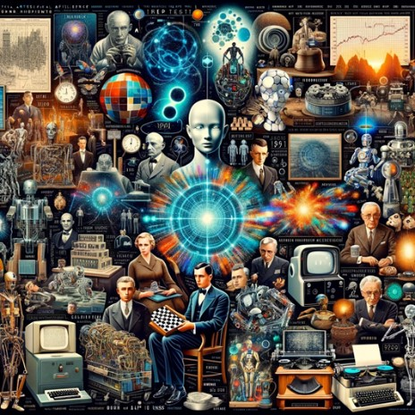

History of Artificial Intelligence
Artificial Intelligence, or AI, has a history that goes back over more than 70 years. It all began in  the 1950s when scientists started to explore how to make machines think and learn. One key moment was when a smart scientist named Alan Turing created a test to see if a machine could fool people into thinking it was human. This was the start of what we now call the Turing Test. Then, in 1956, a big event at Dartmouth College happened where experts said they could make machines smart in just a few months. They were too optimistic, but their meeting was the birth of AI as a field.
In the next years, AI grew slowly. In the 1960s, the first simple robots were made. They could move and 'see' things. By the 1980s, AI could understand language a little and help doctors and scientists with their work. But computers back then were big and expensive, so it was hard for AI to become really popular. Then, everything changed in the 1990s. Computers became smaller, better, and cheaper. People everywhere started using the internet. AI researchers used these new computers to create 'machine learning' and AI started learning from lots of information. Machine learning made AI much smarter. Now, AI is part of many things we use every day. It helps us find places with maps on the internet, it recommends what to watch on TV, and it even helps cars drive by themselves. The story of AI is still being written as it gets smarter every day.